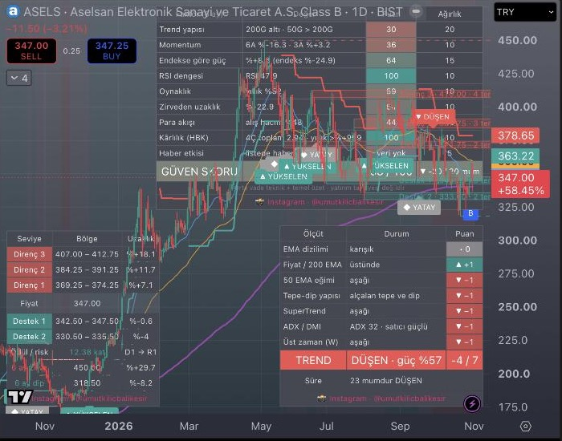

BIST TradingView Göstergeleri
Borsa İstanbul için 3 ücretsiz, açık kaynak Pine Script v6 göstergesi · MIT lisansı
📸 Instagram · @umutkilicbalikesir
Yatırım tavsiyesi değildir. Göstergeler bilgi amaçlıdır, al/sat kararı vermez ve geçmişe dönük getiri testi yapılmamıştır.
Kurulum
- TradingView'de bir BIST grafiği aç (ör. BIST:ASELS, günlük).
- Alttaki Pine Editor sekmesini aç, Create new → Indicator seç ve içeriği sil.
- Aşağıdaki göstergelerden birinin kodunu kopyalayıp yapıştır, Save ve Add to chart.
- Kaydedilen göstergeler Indicators → My scripts altında durur; göz simgesiyle açılıp kapanır.
UK · Otomatik Destek / Direnç
BIST hisseleri için otomatik destek ve direnç bölgeleri: son 6 ayın tepe ve dipleri ATR'ye göre kümelenir, en az 2 kez test edilmiş en yakın 3 destek ve 3 direnç kutu olarak çizilir. Tabloda uzaklık, ödül/risk, 6 ay zirve/dip; kırılım alarmı.
GitHub'da aç · Ham kod (Raw) ·
Pine Script kodunu göster
//@version=6
// UK · Otomatik Destek / Direnç
// Seçilen dönemdeki (varsayılan 6 ay) tepe ve dipleri bulur, birbirine yakın olanları ATR'ye göre
// bölgelere toplar, fiyata en yakın ve en az iki kez test edilmiş bölgeleri grafikte kutu olarak çizer.
// Her zaman diliminde çalışır: bölge kalınlığı grafiğin oynaklığına (ATR) göre kendini ayarlar.
// Hazırlayan: Instagram @umutkilicbalikesir
indicator("UK · Otomatik Destek / Direnç", shorttitle = "UK D/D", overlay = true, max_boxes_count = 60, max_lines_count = 10, max_labels_count = 10, max_bars_back = 5000)
// ── Ayarlar ──
G1 = "Hesaplama"
iMonths = input.int(6, "Dönem (ay)", minval = 1, maxval = 36, group = G1, tooltip = "Seviyeler bu süredeki tepe ve diplerden çıkarılır. Orta vade için 6 ay.")
iPivot = input.int(0, "Tepe/dip genişliği (0 = otomatik)", minval = 0, maxval = 30, group = G1, tooltip = "Bir mumun tepe sayılması için sağında ve solunda kaç mumun daha alçak olması gerektiği. Otomatik: haftalık/aylık grafikte 2, diğerlerinde 5.")
iAtrMult = input.float(0.6, "Bölge kalınlığı (ATR katı)", minval = 0.1, maxval = 3.0, step = 0.1, group = G1, tooltip = "Aralarındaki fark bu mesafeden az olan tepe ve dipler tek bölgede birleşir.")
iMinHit = input.int(2, "En az temas", minval = 1, maxval = 10, group = G1, tooltip = "Bir bölgenin çizilmesi için kaç kez test edilmiş olması gerektiği.")
iCount = input.int(3, "Her yönde seviye sayısı", minval = 1, maxval = 8, group = G1)
iExtreme = input.bool(true, "Dönem zirvesi ve dibini çiz", group = G1)
G2 = "Görünüm"
cSup = input.color(#26a69a, "Destek", group = G2)
cRes = input.color(#ef5350, "Direnç", group = G2)
iFill = input.int(82, "Dolgu saydamlığı", minval = 0, maxval = 100, group = G2)
iExt = input.int(20, "Sağa uzatma (mum)", minval = 0, maxval = 300, group = G2)
iTable = input.bool(true, "Seviye tablosu", group = G2)
iTPos = input.string("Sol alt", "Tablo konumu", options = ["Sağ üst", "Sağ alt", "Sol üst", "Sol alt"], group = G2)
// ── Tepe ve dipleri topla ──
pw = iPivot > 0 ? iPivot : (timeframe.isweekly or timeframe.ismonthly ? 2 : 5)
atr = ta.atr(14)
ph = ta.pivothigh(high, pw, pw)
pl = ta.pivotlow(low, pw, pw)
startT = time - int(iMonths * 30.44 * 86400000.0)
var pvP = array.new<float>()
var pvT = array.new<int>()
var pvB = array.new<int>()
if not na(ph)
pvP.push(ph)
pvT.push(time[pw])
pvB.push(bar_index - pw)
if not na(pl)
pvP.push(pl)
pvT.push(time[pw])
pvB.push(bar_index - pw)
while pvT.size() > 0 and pvT.first() < startT
pvP.shift()
pvT.shift()
pvB.shift()
// Bir kümeyi bölge olarak kaydeder; tek dokunuşlu bölgeler en az çeyrek tolerans kalınlığında çizilir
addZone(array<float> mids, array<float> tops, array<float> bots, array<int> hits, array<int> lefts, float lo, float hi, int n, int left, float tol) =>
mid = (lo + hi) / 2
half = math.max((hi - lo) / 2, tol * 0.25)
mids.push(mid)
tops.push(mid + half)
bots.push(mid - half)
hits.push(n)
lefts.push(left)
pct(float x) =>
na(x) ? "–" : "%" + (x >= 0 ? "+" : "") + str.tostring(x, "#.#")
tPos = switch iTPos
"Sağ alt" => position.bottom_right
"Sol üst" => position.top_left
"Sol alt" => position.bottom_left
=> position.top_right
var tbl = table.new(tPos, 3, 22, border_width = 1, border_color = color.new(color.gray, 80), frame_color = color.new(color.gray, 60), frame_width = 1)
var boxes = array.new<box>()
var lns = array.new<line>()
var lbls = array.new<label>()
var float confSup = na
var float confRes = na
var bool imzaHazir = false
if barstate.islast
// Kapanışta bir önceki mumun seviyeleri kırıldıysa alarm
if barstate.isconfirmed
if not na(confSup) and close < confSup
alert(syminfo.ticker + " desteği aşağı kırdı: " + str.tostring(confSup, format.mintick), alert.freq_once_per_bar_close)
if not na(confRes) and close > confRes
alert(syminfo.ticker + " direnci yukarı geçti: " + str.tostring(confRes, format.mintick), alert.freq_once_per_bar_close)
for b in boxes
b.delete()
boxes.clear()
for l in lns
l.delete()
lns.clear()
for lb in lbls
lb.delete()
lbls.clear()
// ── Kümeleme: fiyata göre sıralanmış tepe/dipler tolerans içinde birleşir ──
tol = atr * iAtrMult
zMid = array.new<float>()
zTop = array.new<float>()
zBot = array.new<float>()
zHit = array.new<int>()
zLeft = array.new<int>()
n = pvP.size()
if n > 0
ord = pvP.sort_indices(order.ascending)
float cLo = na
float cHi = na
int cN = 0
int cL = 0
for i = 0 to n - 1
k = ord.get(i)
p = pvP.get(k)
if cN > 0 and p - cLo <= tol
cHi := p
cN += 1
cL := math.min(cL, pvB.get(k))
else
if cN >= iMinHit
addZone(zMid, zTop, zBot, zHit, zLeft, cLo, cHi, cN, cL, tol)
cLo := p
cHi := p
cN := 1
cL := pvB.get(k)
if cN >= iMinHit
addZone(zMid, zTop, zBot, zHit, zLeft, cLo, cHi, cN, cL, tol)
// ── Fiyatın altı destek, üstü direnç; her yönde en yakın N bölge ──
supI = array.new<int>()
supD = array.new<float>()
resI = array.new<int>()
resD = array.new<float>()
zn = zMid.size()
if zn > 0
for j = 0 to zn - 1
m = zMid.get(j)
if m < close
supI.push(j)
supD.push(close - m)
else
resI.push(j)
resD.push(m - close)
tbl.clear(0, 0, 2, 20)
txtC = chart.fg_color
bgC = color.new(chart.bg_color, 0)
if iTable
tbl.cell(0, 0, "Seviye", text_color = txtC, bgcolor = bgC, text_size = size.small)
tbl.cell(1, 0, "Bölge", text_color = txtC, bgcolor = bgC, text_size = size.small)
tbl.cell(2, 0, "Uzaklık", text_color = txtC, bgcolor = bgC, text_size = size.small)
rCount = math.min(iCount, resI.size())
sCount = math.min(iCount, supI.size())
confRes := na
confSup := na
if rCount > 0
rOrd = resD.sort_indices(order.ascending)
for r = 0 to rCount - 1
j = resI.get(rOrd.get(r))
m = zMid.get(j)
txt = "Direnç " + str.tostring(r + 1) + " · " + str.tostring(m, format.mintick) + " · " + str.tostring(zHit.get(j)) + " temas"
boxes.push(box.new(zLeft.get(j), zTop.get(j), bar_index + iExt, zBot.get(j), border_color = color.new(cRes, 40), bgcolor = color.new(cRes, iFill), text = txt, text_size = size.small, text_color = cRes, text_halign = text.align_right, text_valign = text.align_center))
if r == 0 and barstate.isconfirmed
confRes := zTop.get(j)
if iTable
row = 1 + (rCount - 1 - r)
tbl.cell(0, row, "Direnç " + str.tostring(r + 1), text_color = color.white, bgcolor = color.new(cRes, 30), text_size = size.small)
tbl.cell(1, row, str.tostring(zBot.get(j), format.mintick) + " – " + str.tostring(zTop.get(j), format.mintick), text_color = txtC, bgcolor = bgC, text_size = size.small)
tbl.cell(2, row, pct((m / close - 1) * 100), text_color = txtC, bgcolor = bgC, text_size = size.small)
priceRow = 1 + rCount
if iTable
tbl.cell(0, priceRow, "Fiyat", text_color = txtC, bgcolor = color.new(color.gray, 70), text_size = size.small)
tbl.cell(1, priceRow, str.tostring(close, format.mintick), text_color = txtC, bgcolor = color.new(color.gray, 70), text_size = size.small)
tbl.cell(2, priceRow, "", bgcolor = color.new(color.gray, 70))
if sCount > 0
sOrd = supD.sort_indices(order.ascending)
for s = 0 to sCount - 1
j = supI.get(sOrd.get(s))
m = zMid.get(j)
txt = "Destek " + str.tostring(s + 1) + " · " + str.tostring(m, format.mintick) + " · " + str.tostring(zHit.get(j)) + " temas"
boxes.push(box.new(zLeft.get(j), zTop.get(j), bar_index + iExt, zBot.get(j), border_color = color.new(cSup, 40), bgcolor = color.new(cSup, iFill), text = txt, text_size = size.small, text_color = cSup, text_halign = text.align_right, text_valign = text.align_center))
if s == 0 and barstate.isconfirmed
confSup := zBot.get(j)
if iTable
row = priceRow + 1 + s
tbl.cell(0, row, "Destek " + str.tostring(s + 1), text_color = color.white, bgcolor = color.new(cSup, 30), text_size = size.small)
tbl.cell(1, row, str.tostring(zBot.get(j), format.mintick) + " – " + str.tostring(zTop.get(j), format.mintick), text_color = txtC, bgcolor = bgC, text_size = size.small)
tbl.cell(2, row, pct((m / close - 1) * 100), text_color = txtC, bgcolor = bgC, text_size = size.small)
// ── Risk / ödül: en yakın dirence kalan yol ÷ en yakın desteğe kalan yol ──
rrRow = priceRow + sCount + 1
if iTable and rCount > 0 and sCount > 0
up = zMid.get(resI.get(resD.sort_indices(order.ascending).get(0))) - close
dn = close - zMid.get(supI.get(supD.sort_indices(order.ascending).get(0)))
rr = dn > 0 ? up / dn : float(na)
tbl.cell(0, rrRow, "Ödül / risk", text_color = txtC, bgcolor = bgC, text_size = size.small)
tbl.cell(1, rrRow, na(rr) ? "–" : str.tostring(rr, "#.##") + " kat", text_color = na(rr) ? txtC : rr >= 2 ? cSup : rr < 1 ? cRes : txtC, bgcolor = bgC, text_size = size.small)
tbl.cell(2, rrRow, "D1 → R1", text_color = txtC, bgcolor = bgC, text_size = size.small)
// ── Dönem zirvesi ve dibi ──
if iExtreme
float pHi = na
float pLo = na
int bHi = na
int bLo = na
for i = 0 to math.min(bar_index, 4999)
if time[i] < startT
break
if na(pHi) or high[i] > pHi
pHi := high[i]
bHi := bar_index - i
if na(pLo) or low[i] < pLo
pLo := low[i]
bLo := bar_index - i
lastRow = rrRow + 1
if not na(pHi)
lns.push(line.new(bHi, pHi, bar_index + iExt, pHi, color = color.new(cRes, 20), style = line.style_dashed))
lbls.push(label.new(bar_index + iExt, pHi, str.tostring(iMonths) + " ay zirve · " + str.tostring(pHi, format.mintick), style = label.style_label_left, color = color.new(color.white, 100), textcolor = cRes, size = size.small))
if iTable
tbl.cell(0, lastRow, str.tostring(iMonths) + " ay zirve", text_color = cRes, bgcolor = bgC, text_size = size.small)
tbl.cell(1, lastRow, str.tostring(pHi, format.mintick), text_color = txtC, bgcolor = bgC, text_size = size.small)
tbl.cell(2, lastRow, pct((pHi / close - 1) * 100), text_color = txtC, bgcolor = bgC, text_size = size.small)
if not na(pLo)
lns.push(line.new(bLo, pLo, bar_index + iExt, pLo, color = color.new(cSup, 20), style = line.style_dashed))
lbls.push(label.new(bar_index + iExt, pLo, str.tostring(iMonths) + " ay dip · " + str.tostring(pLo, format.mintick), style = label.style_label_left, color = color.new(color.white, 100), textcolor = cSup, size = size.small))
if iTable
tbl.cell(0, lastRow + 1, str.tostring(iMonths) + " ay dip", text_color = cSup, bgcolor = bgC, text_size = size.small)
tbl.cell(1, lastRow + 1, str.tostring(pLo, format.mintick), text_color = txtC, bgcolor = bgC, text_size = size.small)
tbl.cell(2, lastRow + 1, pct((pLo / close - 1) * 100), text_color = txtC, bgcolor = bgC, text_size = size.small)
// ── İmza: tablonun en alt satırı (boş satırlar çizilmez) ──
if iTable
tbl.cell(0, 21, "📸 Instagram · @umutkilicbalikesir", text_color = #E1306C, bgcolor = bgC, text_size = size.small)
if not imzaHazir
tbl.merge_cells(0, 21, 2, 21)
imzaHazir := true
UK · Trend Yönü
7 ölçütlü trend puanı (EMA dizilimi, 200 EMA, 50 EMA eğimi, tepe-dip yapısı, SuperTrend, ADX/DMI, haftalık trend): YÜKSELEN / DÜŞEN / YATAY, trendin süresi ve değişim alarmları.
GitHub'da aç · Ham kod (Raw) ·
Pine Script kodunu göster
//@version=6
// UK · Trend Yönü
// Yedi bağımsız ölçütün her biri +1 (yükseliş), 0 (kararsız) ya da -1 (düşüş) verir.
// Toplam puan eşiğin üstündeyse YÜKSELEN, eksi eşiğin altındaysa DÜŞEN, arada YATAY.
// Ölçütler: EMA dizilimi, fiyatın 200 EMA'ya göre yeri, 50 EMA eğimi, tepe-dip yapısı,
// SuperTrend, ADX/DMI ve üst zaman dilimi trendi. Her zaman diliminde çalışır.
// Hazırlayan: Instagram @umutkilicbalikesir
indicator("UK · Trend Yönü", shorttitle = "UK Trend", overlay = true, max_labels_count = 300)
// ── Ayarlar ──
G1 = "Ortalamalar"
iFast = input.int(20, "Hızlı EMA", minval = 2, group = G1)
iMid = input.int(50, "Orta EMA", minval = 5, group = G1)
iSlow = input.int(200, "Yavaş EMA", minval = 20, group = G1)
iShowMA = input.bool(true, "Ortalamaları çiz", group = G1)
G2 = "Ölçütler"
iSwing = input.int(5, "Tepe/dip genişliği", minval = 2, maxval = 20, group = G2)
iStF = input.float(3.0, "SuperTrend çarpanı", minval = 0.5, step = 0.1, group = G2)
iStP = input.int(10, "SuperTrend ATR süresi", minval = 1, group = G2)
iAdxLen = input.int(14, "ADX süresi", minval = 2, group = G2)
iAdxMin = input.float(20, "Trend sayılması için en az ADX", minval = 5, group = G2)
iHtf = input.timeframe("W", "Üst zaman dilimi", group = G2, tooltip = "Grafikten büyük bir zaman dilimi seçin. Günlük grafik için Haftalık (W), haftalık grafik için Aylık (M).")
iThr = input.int(3, "Trend eşiği (7 üzerinden)", minval = 1, maxval = 7, group = G2, tooltip = "Toplam puan bu değere ulaşırsa YÜKSELEN, eksi bu değere inerse DÜŞEN, arada YATAY.")
G3 = "Görünüm"
cUp = input.color(#26a69a, "Yükselen", group = G3)
cDn = input.color(#ef5350, "Düşen", group = G3)
cSide = input.color(#9e9e9e, "Yatay", group = G3)
iBg = input.bool(true, "Arka planı trende göre boya", group = G3)
iBar = input.bool(false, "Mumları trende göre boya", group = G3)
iLbl = input.bool(true, "Trend değişimlerini etiketle", group = G3)
iTable = input.bool(true, "Ölçüt tablosu", group = G3)
iTPos = input.string("Sağ alt", "Tablo konumu", options = ["Sağ üst", "Sağ alt", "Sol üst", "Sol alt"], group = G3)
// ── 1) EMA dizilimi ──
emaF = ta.ema(close, iFast)
emaM = ta.ema(close, iMid)
emaS = ta.ema(close, iSlow)
c1 = emaF > emaM and emaM > emaS ? 1 : emaF < emaM and emaM < emaS ? -1 : 0
// ── 2) Fiyat / yavaş EMA ──
c2 = na(emaS) ? 0 : close > emaS ? 1 : -1
// ── 3) Orta EMA eğimi (10 mumda ATR cinsinden) ──
atr = ta.atr(14)
slope = (emaM - emaM[10]) / atr
c3 = na(slope) ? 0 : slope > 0.5 ? 1 : slope < -0.5 ? -1 : 0
// ── 4) Tepe-dip yapısı: yükselen tepe + yükselen dip ya da tersi; son tepe/dip kırılımı öncelikli ──
ph = ta.pivothigh(high, iSwing, iSwing)
pl = ta.pivotlow(low, iSwing, iSwing)
var float ph1 = na
var float ph2 = na
var float pl1 = na
var float pl2 = na
if not na(ph)
ph2 := ph1
ph1 := ph
if not na(pl)
pl2 := pl1
pl1 := pl
c4 = 0
if not na(ph2) and not na(pl2)
hh = ph1 > ph2
hl = pl1 > pl2
c4 := hh and hl ? 1 : not hh and not hl ? -1 : 0
if not na(pl1) and close < pl1
c4 := -1
if not na(ph1) and close > ph1
c4 := 1
// ── 5) SuperTrend ──
[st, stDir] = ta.supertrend(iStF, iStP)
c5 = stDir < 0 ? 1 : -1
// ── 6) ADX / DMI: trend gücü yetersizse 0 ──
[diP, diM, adx] = ta.dmi(iAdxLen, iAdxLen)
c6 = adx < iAdxMin ? 0 : diP > diM ? 1 : -1
// ── 7) Üst zaman dilimi (kapanmış mumla, geriye dönük boyama yapmaz) ──
htfDir() =>
e = ta.ema(close, 20)
close > e and e > e[1] ? 1 : close < e and e < e[1] ? -1 : 0
c7 = nz(request.security(syminfo.tickerid, iHtf, htfDir()[1], lookahead = barmerge.lookahead_on))
// ── Toplam ──
score = c1 + c2 + c3 + c4 + c5 + c6 + c7
regime = score >= iThr ? 1 : score <= -iThr ? -1 : 0
regCol = regime == 1 ? cUp : regime == -1 ? cDn : cSide
var int regStart = na
if na(regime[1]) or regime != regime[1]
regStart := bar_index
plot(iShowMA ? emaF : na, "Hızlı EMA", color.new(#42a5f5, 20))
plot(iShowMA ? emaM : na, "Orta EMA", color.new(#ffa726, 20))
plot(iShowMA ? emaS : na, "Yavaş EMA", color.new(#ab47bc, 10), 2)
plot(stDir < 0 ? st : na, "SuperTrend yukarı", cUp, 2, plot.style_linebr)
plot(stDir > 0 ? st : na, "SuperTrend aşağı", cDn, 2, plot.style_linebr)
bgcolor(iBg ? color.new(regCol, 92) : na, title = "Trend arka planı")
barcolor(iBar ? regCol : na, title = "Trend mum rengi")
if iLbl and not na(regime[1]) and regime != regime[1]
up = regime == 1
dn = regime == -1
label.new(bar_index, dn ? high : low, up ? "▲ YÜKSELEN" : dn ? "▼ DÜŞEN" : "◆ YATAY", yloc = dn ? yloc.abovebar : yloc.belowbar, style = dn ? label.style_label_down : label.style_label_up, color = regCol, textcolor = color.white, size = size.small)
alertcondition(regime == 1 and regime[1] != 1, "Trend YÜKSELEN oldu", "{{ticker}} trendi YÜKSELEN'e döndü")
alertcondition(regime == -1 and regime[1] != -1, "Trend DÜŞEN oldu", "{{ticker}} trendi DÜŞEN'e döndü")
alertcondition(regime == 0 and regime[1] != 0, "Trend YATAY oldu", "{{ticker}} trendi YATAY'a döndü")
// ── Tablo ──
tPos = switch iTPos
"Sağ üst" => position.top_right
"Sol üst" => position.top_left
"Sol alt" => position.bottom_left
=> position.bottom_right
var tb = table.new(tPos, 3, 11, border_width = 1, border_color = color.new(color.gray, 80), frame_color = color.new(color.gray, 60), frame_width = 1)
var bool imzaHazir = false
puan(int v) =>
v > 0 ? "▲ +1" : v < 0 ? "▼ −1" : "• 0"
renk(int v) =>
v > 0 ? cUp : v < 0 ? cDn : cSide
yon(int v, string a, string b, string c) =>
v > 0 ? a : v < 0 ? b : c
if barstate.islast and iTable
fg = chart.fg_color
bg = chart.bg_color
tb.cell(0, 0, "Ölçüt", text_color = fg, bgcolor = bg, text_size = size.small)
tb.cell(1, 0, "Durum", text_color = fg, bgcolor = bg, text_size = size.small)
tb.cell(2, 0, "Puan", text_color = fg, bgcolor = bg, text_size = size.small)
names = array.from("EMA dizilimi", "Fiyat / " + str.tostring(iSlow) + " EMA", str.tostring(iMid) + " EMA eğimi", "Tepe-dip yapısı", "SuperTrend", "ADX / DMI", "Üst zaman (" + iHtf + ")")
vals = array.from(c1, c2, c3, c4, c5, c6, c7)
descs = array.from(yon(c1, str.format("{0} > {1} > {2}", iFast, iMid, iSlow), str.format("{0} < {1} < {2}", iFast, iMid, iSlow), "karışık"), yon(c2, "üstünde", "altında", "veri yok"), yon(c3, "yukarı", "aşağı", "yatay"), yon(c4, "yükselen tepe ve dip", "alçalan tepe ve dip", "karışık"), yon(c5, "yukarı", "aşağı", "–"), "ADX " + str.tostring(adx, "#") + yon(c6, " · alıcı güçlü", " · satıcı güçlü", " · trend zayıf"), yon(c7, "yukarı", "aşağı", "yatay"))
for i = 0 to 6
v = vals.get(i)
tb.cell(0, i + 1, names.get(i), text_color = fg, bgcolor = bg, text_halign = text.align_left, text_size = size.small)
tb.cell(1, i + 1, descs.get(i), text_color = fg, bgcolor = bg, text_halign = text.align_left, text_size = size.small)
tb.cell(2, i + 1, puan(v), text_color = color.white, bgcolor = color.new(renk(v), 25), text_size = size.small)
rTxt = regime == 1 ? "YÜKSELEN" : regime == -1 ? "DÜŞEN" : "YATAY"
tb.cell(0, 8, "TREND", text_color = color.white, bgcolor = regCol, text_size = size.normal)
tb.cell(1, 8, rTxt + " · güç %" + str.tostring(math.abs(score) / 7.0 * 100, "#"), text_color = color.white, bgcolor = regCol, text_size = size.normal)
tb.cell(2, 8, (score > 0 ? "+" : "") + str.tostring(score) + " / 7", text_color = color.white, bgcolor = regCol, text_size = size.normal)
tb.cell(0, 9, "Süre", text_color = fg, bgcolor = bg, text_size = size.small)
tb.cell(1, 9, str.tostring(bar_index - regStart) + " mumdur " + rTxt, text_color = fg, bgcolor = bg, text_halign = text.align_left, text_size = size.small)
tb.cell(2, 9, "", bgcolor = bg)
tb.cell(0, 10, "📸 Instagram · @umutkilicbalikesir", text_color = #E1306C, bgcolor = bg, text_size = size.small)
if not imzaHazir
tb.merge_cells(0, 10, 2, 10)
imzaHazir := true
UK · Güven Skoru + Şirket Olayları
9 faktörlü 0–100 orta vade güven skoru (trend, momentum, XU100'e göre güç, RSI, oynaklık, zirveden uzaklık, para akışı, HBK, haber) ve grafikte bilanço, temettü, bölünme/bedelsiz ve haber işaretleri. BIST hacmi BIST_DLY akışından alınır.
GitHub'da aç · Ham kod (Raw) ·
Pine Script kodunu göster
//@version=6
// UK · Güven Skoru (orta vade, 6 ay) + Şirket Olayları
// Skor 0–100 arasıdır ve dokuz faktörün ağırlıklı ortalamasıdır. Hepsi GÜNLÜK veriden hesaplanır,
// bu yüzden hangi zaman diliminde bakarsanız bakın aynı skoru görürsünüz.
// 1 Trend yapısı fiyat ve 50 günlük ortalama, 200 günlük ortalamanın üstünde mi, 50G yükseliyor mu
// 2 Momentum 6 ve 3 aylık getiri
// 3 Endekse göre güç 6 aylık getiri eksi kıyas endeksinin 6 aylık getirisi
// 4 RSI dengesi 45–65 arası en iyi; aşırı alım ve aşırı satım puan düşürür
// 5 Oynaklık yıllık oynaklık düştükçe puan artar
// 6 Zirveden uzaklık 6 aylık zirveye yakınlık
// 7 Para akışı son 3 ayda yükselen günlerin hacmi / toplam hacim
// 8 Kârlılık son 4 çeyrek HBK toplamı pozitif mi, bir yıl öncesine göre büyüyor mu
// 9 Haber etkisi son 6 ayda listeye girdiğiniz haberlerin net etkisi
// Verisi olmayan faktör (ör. kısa geçmiş, bilanço verisi yok) hesaba katılmaz, kalan ağırlıklar yeniden dağıtılır.
//
// Olaylar: bilanço (B), temettü (T), bölünme/bedelsiz (S) TradingView verisinden otomatik gelir.
// Haberler (H) "Haber listesi" kutusuna girilir; Pine Script KAP veya haber akışına erişemez.
// Her olayın üstüne gelince, olaydan sonraki N mumdaki fiyat tepkisi ve hacim artışı görünür.
// Hazırlayan: Instagram @umutkilicbalikesir
indicator("UK · Güven Skoru + Şirket Olayları", shorttitle = "UK Güven", overlay = true, max_labels_count = 500)
// ── Ayarlar ──
G0 = "Kıyas"
iIdx = input.symbol("BIST:XU100", "Kıyas endeksi", group = G0)
iVolP = input.string("BIST_DLY:", "BIST hacim öneki", group = G0, tooltip = "BIST: akışında hacim yok; hacim 15 dk gecikmeli BIST_DLY: akışından alınır. Boş bırakılırsa grafiğin kendi hacmi kullanılır.")
G1 = "Ağırlıklar"
wTrend = input.int(20, "Trend yapısı", minval = 0, maxval = 50, group = G1)
wMom = input.int(10, "Momentum (3–6 ay)", minval = 0, maxval = 50, group = G1)
wRel = input.int(15, "Endekse göre güç", minval = 0, maxval = 50, group = G1)
wRsi = input.int(10, "RSI dengesi", minval = 0, maxval = 50, group = G1)
wVol = input.int(10, "Oynaklık", minval = 0, maxval = 50, group = G1)
wDd = input.int(10, "Zirveden uzaklık", minval = 0, maxval = 50, group = G1)
wFlow = input.int(10, "Para akışı", minval = 0, maxval = 50, group = G1)
wEps = input.int(10, "Kârlılık (HBK)", minval = 0, maxval = 50, group = G1)
wNews = input.int(5, "Haber etkisi", minval = 0, maxval = 50, group = G1)
G2 = "Olaylar"
iShowEarn = input.bool(true, "Bilançolar (B)", group = G2)
iShowDiv = input.bool(true, "Temettüler (T)", group = G2)
iShowSpl = input.bool(true, "Bölünme / bedelsiz (S)", group = G2)
iShowNews = input.bool(true, "Haberler (H)", group = G2)
iNewsTxt = input.bool(false, "Haber başlığını grafiğe yaz", group = G2)
iReact = input.int(5, "Tepki ölçümü (mum)", minval = 1, maxval = 30, group = G2, tooltip = "Olaydan önceki kapanışa göre kaç mum sonraki fiyat değişimi ve hacim ölçülsün.")
iNews = input.text_area("", "Haber listesi", group = G2, tooltip = "Her satıra bir haber:\nHİSSE | TARİH | ETKİ | BAŞLIK\n\nTarih: 2026-10-15 ya da 15.10.2026\nEtki: + olumlu, - olumsuz, 0 nötr\nHİSSE yerine * yazarsanız her grafikte görünür.\n\nÖrnek:\nASELS | 15.10.2026 | + | Yeni ihracat sözleşmesi\nKLSER | 2026-10-30 | - | Sermaye artırımı ertelendi\n\nTüm hisselerin haberlerini tek listede tutabilirsiniz; her grafikte yalnızca o hisseninkiler görünür.")
G3 = "Görünüm"
iTable = input.bool(true, "Skor tablosu", group = G3)
iTPos = input.string("Sağ üst", "Tablo konumu", options = ["Sağ üst", "Sağ alt", "Sol üst", "Sol alt"], group = G3)
iTSize = input.string("Küçük", "Tablo yazı boyutu", options = ["Çok küçük", "Küçük", "Normal"], group = G3)
// ── Yardımcılar ──
lin(float x, float x0, float x1) =>
na(x) ? float(na) : math.max(0.0, math.min(100.0, (x - x0) / (x1 - x0) * 100.0))
pct(float x) =>
na(x) ? "–" : "%" + (x >= 0 ? "+" : "") + str.tostring(x, "#.#")
// Taban sıfıra yakınken oluşan dev oranları okunur tutar
pctK(float x) =>
na(x) ? "–" : math.abs(x) > 999 ? (x > 0 ? ">%+999" : "<%−999") : pct(x)
kategori(float s) =>
na(s) ? "–" : s >= 70 ? "YÜKSEK" : s >= 55 ? "İYİ" : s >= 40 ? "ORTA" : s >= 25 ? "ZAYIF" : "DÜŞÜK"
// ── Günlük veriden faktör girdileri ──
gunluk() =>
s50 = ta.sma(close, 50)
s200 = ta.sma(close, 200)
slope = (s50 - s50[20]) / ta.atr(14)
r126 = (close / close[126] - 1) * 100
r63 = (close / close[63] - 1) * 100
rsi = ta.rsi(close, 14)
vola = ta.stdev(math.log(close / close[1]), 126) * math.sqrt(252) * 100
dd = (close / ta.highest(high, 126) - 1) * 100
[close, s50, s200, slope, r126, r63, rsi, vola, dd]
// Para akışı hacim gerektirir; BIST'te hacim yalnız BIST_DLY: akışında var
akis() =>
v = nz(volume) // tek bir boş hacim günü 63 günlük toplamı boşaltmasın
upv = math.sum(close > close[1] ? v : 0.0, 63)
dnv = math.sum(close < close[1] ? v : 0.0, 63)
upv + dnv > 0 ? upv / (upv + dnv) : float(na)
volSym = str.startswith(syminfo.prefix, "BIST") and iVolP != "" ? iVolP + syminfo.ticker : syminfo.tickerid // BIST, BISTMIXED vb.
[dC, d50, d200, dSlope, d126, d63, dRsi, dVola, dDd] = request.security(syminfo.tickerid, "D", gunluk())
dFlow = request.security(volSym, "D", akis(), ignore_invalid_symbol = true)
vol = request.security(volSym, timeframe.period, volume, ignore_invalid_symbol = true)
iR126 = request.security(iIdx, "D", (close / close[126] - 1) * 100, ignore_invalid_symbol = true)
// ── Faktör puanları (0–100) ──
float sTrend = na
if not na(d200)
sTrend := (dC > d200 ? 40.0 : 0.0) + (d50 > d200 ? 30.0 : 0.0) + (dSlope > 0 ? 30.0 : 0.0)
else if not na(d50)
sTrend := (dC > d50 ? 50.0 : 0.0) + (dSlope > 0 ? 50.0 : 0.0)
m1 = lin(d126, -30, 40)
m2 = lin(d63, -20, 25)
sMom = na(m1) ? m2 : na(m2) ? m1 : (m1 + m2) / 2
rel = d126 - iR126
sRel = lin(rel, -30, 30)
float sRsi = na
if not na(dRsi)
sRsi := dRsi < 45 ? lin(dRsi, 25, 45) : dRsi > 65 ? lin(dRsi, 85, 65) : 100.0
sVol = lin(dVola, 90, 25)
sDd = lin(dDd, -50, 0)
sFlow = lin(dFlow, 0.35, 0.65)
// ── Kârlılık: açıklanan çeyreklik HBK geçmişi ──
eAct = request.earnings(syminfo.tickerid, earnings.actual, barmerge.gaps_on, ignore_invalid_symbol = true)
eEst = request.earnings(syminfo.tickerid, earnings.estimate, barmerge.gaps_on, ignore_invalid_symbol = true)
var epsHist = array.new<float>()
if not na(eAct)
epsHist.push(eAct)
float sEps = na
float epsSum = na
float epsGr = na
nE = epsHist.size()
if nE >= 4
epsSum := 0.0
for i = nE - 4 to nE - 1
epsSum += epsHist.get(i)
if nE >= 8
prev = 0.0
for i = nE - 8 to nE - 5
prev += epsHist.get(i)
epsGr := prev != 0 ? (epsSum - prev) / math.abs(prev) * 100 : na
else if nE >= 5
old = epsHist.get(nE - 5)
epsGr := old != 0 ? (epsHist.last() - old) / math.abs(old) * 100 : na
sEps := (epsSum > 0 ? 50.0 : 0.0) + (na(epsGr) ? 25.0 : lin(epsGr, -50, 50) / 2)
else if nE >= 1
sEps := epsHist.last() > 0 ? 60.0 : 20.0
// ── Haber listesini bir kez çözümle ──
var nT = array.new<int>()
var nImp = array.new<int>()
var nTxt = array.new<string>()
if barstate.isfirst and str.length(iNews) > 0
satirlar = str.split(str.replace_all(iNews, "\r", ""), "\n")
for ln in satirlar
parts = str.split(ln, "|")
if parts.size() >= 4
tk = str.upper(str.replace_all(parts.get(0), " ", ""))
if str.contains(tk, ":")
tk := str.split(tk, ":").last()
if tk == "*" or tk == str.upper(syminfo.ticker)
ds = str.replace_all(parts.get(1), " ", "")
int y = na
int m = na
int d = na
if str.contains(ds, "-")
p = str.split(ds, "-")
if p.size() == 3
y := int(str.tonumber(p.get(0)))
m := int(str.tonumber(p.get(1)))
d := int(str.tonumber(p.get(2)))
else if str.contains(ds, ".")
p = str.split(ds, ".")
if p.size() == 3
d := int(str.tonumber(p.get(0)))
m := int(str.tonumber(p.get(1)))
y := int(str.tonumber(p.get(2)))
if not na(y) and not na(m) and not na(d)
imp = str.replace_all(parts.get(2), " ", "")
nT.push(timestamp(syminfo.timezone, y, m, d, 0, 0))
nImp.push(imp == "+" ? 1 : imp == "-" ? -1 : 0)
nTxt.push(parts.get(3))
// ── Haber etkisi: son 6 aydaki haberlerin net yönü ──
SIX_M = 182 * 86400000
float sNews = na
int newsCnt = 0
int newsNet = 0
if nT.size() > 0
for i = 0 to nT.size() - 1
t = nT.get(i)
if t <= time_close and t >= time - SIX_M
newsCnt += 1
newsNet += nImp.get(i)
if newsCnt > 0
sNews := lin(newsNet, -3, 3)
// ── Ağırlıklı toplam ──
scores = array.from(sTrend, sMom, sRel, sRsi, sVol, sDd, sFlow, sEps, sNews)
weights = array.from(wTrend, wMom, wRel, wRsi, wVol, wDd, wFlow, wEps, wNews)
float tot = 0.0
float wsum = 0.0
for i = 0 to 8
s = scores.get(i)
w = weights.get(i)
if not na(s) and w > 0
tot += s * w
wsum += w
score = wsum > 0 ? tot / wsum : float(na)
plot(score, "Güven skoru", display = display.data_window)
alertcondition(ta.crossover(score, 55), "Güven skoru 55 üstüne çıktı", "{{ticker}} güven skoru İYİ bölgesine geçti")
alertcondition(ta.crossunder(score, 40), "Güven skoru 40 altına indi", "{{ticker}} güven skoru ZAYIF bölgesine indi")
// ── Olay işaretleri ve tepki ölçümü ──
volAvg = ta.sma(vol, 20)
reactVol = ta.sma(vol, iReact + 1)
prevClose = close[1]
prevVol = volAvg[1]
prevTC = time_close[1]
var pLbl = array.new<label>()
var pBar = array.new<int>()
var pBase = array.new<float>()
var pVol = array.new<float>()
var pTip = array.new<string>()
olay(string ch, color col, bool above, string tip, string txt) =>
lb = label.new(bar_index, above ? high : low, txt == "" ? ch : ch + " · " + txt, yloc = above ? yloc.abovebar : yloc.belowbar, style = above ? label.style_label_down : label.style_label_up, color = col, textcolor = color.white, size = size.small, tooltip = tip + "\n" + str.tostring(iReact) + " mumluk tepki ölçülüyor…")
pLbl.push(lb)
pBar.push(bar_index)
pBase.push(prevClose)
pVol.push(prevVol)
pTip.push(tip)
tarih = str.format_time(time, "dd.MM.yyyy", syminfo.timezone)
if iShowEarn and not na(eAct)
olay("B", #2962ff, false, "BİLANÇO · " + tarih + "\nHBK: " + str.tostring(eAct, "#.###") + (na(eEst) ? "" : " · beklenti " + str.tostring(eEst, "#.###")), "")
dv = request.dividends(syminfo.tickerid, dividends.gross, barmerge.gaps_on, ignore_invalid_symbol = true)
if iShowDiv and not na(dv)
olay("T", #8e24aa, false, "TEMETTÜ · " + tarih + "\nHisse başı brüt: " + str.tostring(dv, "#.####"), "")
spN = request.splits(syminfo.tickerid, splits.numerator, barmerge.gaps_on, ignore_invalid_symbol = true)
spD = request.splits(syminfo.tickerid, splits.denominator, barmerge.gaps_on, ignore_invalid_symbol = true)
if iShowSpl and not na(spN)
olay("S", #f57c00, false, "BÖLÜNME / BEDELSİZ · " + tarih + "\nOran: " + str.tostring(spD) + " → " + str.tostring(spN), "")
if iShowNews and nT.size() > 0
for i = 0 to nT.size() - 1
t = nT.get(i)
if t <= time_close and t > prevTC
v = nImp.get(i)
col = v > 0 ? #26a69a : v < 0 ? #ef5350 : #787b86
etk = v > 0 ? "Olumlu" : v < 0 ? "Olumsuz" : "Nötr"
bas = nTxt.get(i)
kisa = str.length(bas) > 40 ? str.substring(bas, 0, 40) + "…" : bas
olay("H", col, true, "HABER · " + str.format_time(t, "dd.MM.yyyy", syminfo.timezone) + " · " + etk + "\n" + bas, iNewsTxt ? kisa : "")
// N mum dolduğunda tepkiyi etiketin açıklamasına yaz
if pBar.size() > 0
for i = pBar.size() - 1 to 0
if bar_index - pBar.get(i) >= iReact
b0 = pBase.get(i)
v0 = pVol.get(i)
ret = b0 > 0 ? (close / b0 - 1) * 100 : float(na)
vr = v0 > 0 ? reactVol / v0 : float(na)
pLbl.get(i).set_tooltip(pTip.get(i) + "\n" + str.tostring(iReact) + " mumluk fiyat tepkisi: " + pct(ret) + (na(vr) ? "" : " · hacim " + str.tostring(vr, "#.#") + " kat"))
pLbl.remove(i)
pBar.remove(i)
pBase.remove(i)
pVol.remove(i)
pTip.remove(i)
// ── Skor tablosu ──
tPos = switch iTPos
"Sağ üst" => position.top_right
"Sağ alt" => position.bottom_right
"Sol alt" => position.bottom_left
=> position.top_left
tSz = switch iTSize
"Çok küçük" => size.tiny
"Normal" => size.normal
=> size.small
var tb = table.new(tPos, 4, 13, border_width = 1, border_color = color.new(color.gray, 80), frame_color = color.new(color.gray, 60), frame_width = 1)
var bool imzaHazir = false
satir(int r, string ad, string deger, float s, int w) =>
fg = chart.fg_color
bg = chart.bg_color
sc = na(s) ? color.gray : color.from_gradient(s, 0, 100, #ef5350, #26a69a)
tb.cell(0, r, ad, text_color = fg, bgcolor = bg, text_halign = text.align_left, text_size = tSz)
tb.cell(1, r, deger, text_color = fg, bgcolor = bg, text_halign = text.align_left, text_size = tSz)
tb.cell(2, r, na(s) ? "veri yok" : str.tostring(math.round(s)), text_color = color.white, bgcolor = color.new(sc, 20), text_size = tSz)
tb.cell(3, r, str.tostring(w), text_color = fg, bgcolor = bg, text_size = tSz)
if barstate.islast and iTable
fg = chart.fg_color
bg = chart.bg_color
tb.cell(0, 0, "Faktör (6 ay)", text_color = fg, bgcolor = bg, text_size = tSz)
tb.cell(1, 0, "Değer", text_color = fg, bgcolor = bg, text_size = tSz)
tb.cell(2, 0, "Puan", text_color = fg, bgcolor = bg, text_size = tSz)
tb.cell(3, 0, "Ağırlık", text_color = fg, bgcolor = bg, text_size = tSz)
satir(1, "Trend yapısı", na(d200) ? "200G ort. için veri az" : (dC > d200 ? "200G üstü" : "200G altı") + (d50 > d200 ? " · 50G > 200G" : " · 50G < 200G"), sTrend, wTrend)
satir(2, "Momentum", "6A " + pct(d126) + " · 3A " + pct(d63), sMom, wMom)
satir(3, "Endekse göre güç", pct(rel) + " (endeks " + pct(iR126) + ")", sRel, wRel)
satir(4, "RSI dengesi", "RSI " + str.tostring(dRsi, "#.#"), sRsi, wRsi)
satir(5, "Oynaklık", "yıllık %" + str.tostring(dVola, "#"), sVol, wVol)
satir(6, "Zirveden uzaklık", pct(dDd), sDd, wDd)
satir(7, "Para akışı", na(dFlow) ? "hacim yok" : "alış hacmi %" + str.tostring(dFlow * 100, "#"), sFlow, wFlow)
satir(8, "Kârlılık (HBK)", na(epsSum) ? (nE > 0 ? "son HBK " + str.tostring(epsHist.last(), "#.##") : "bilanço verisi yok") : "4Ç toplam " + str.tostring(epsSum, "#.##") + (na(epsGr) ? "" : " · yıllık " + pctK(epsGr)), sEps, wEps)
satir(9, "Haber etkisi", newsCnt > 0 ? str.tostring(newsCnt) + " haber · net " + (newsNet > 0 ? "+" : "") + str.tostring(newsNet) : "listede haber yok", sNews, wNews)
sc = na(score) ? color.gray : color.from_gradient(score, 0, 100, #ef5350, #26a69a)
tb.cell(0, 10, "GÜVEN SKORU", text_color = color.white, bgcolor = sc, text_size = size.normal)
tb.cell(1, 10, kategori(score), text_color = color.white, bgcolor = sc, text_size = size.normal)
tb.cell(2, 10, na(score) ? "–" : str.tostring(math.round(score)) + " / 100", text_color = color.white, bgcolor = sc, text_size = size.normal)
d20 = score - score[20]
tb.cell(3, 10, na(d20) ? "" : (d20 >= 0 ? "▲ +" : "▼ ") + str.tostring(d20, "#") + " / 20 mum", text_color = color.white, bgcolor = sc, text_size = tSz)
tb.cell(0, 11, "Orta vade teknik + temel özet · yatırım tavsiyesi değildir", text_color = color.gray, bgcolor = bg, text_size = size.tiny)
tb.cell(0, 12, "📸 Instagram · @umutkilicbalikesir", text_color = #E1306C, bgcolor = bg, text_size = tSz)
if not imzaHazir // birleştirme yalnız bir kez (canlı mumda her tikte tekrar etmesin)
tb.merge_cells(0, 11, 3, 11)
tb.merge_cells(0, 12, 3, 12)
imzaHazir := true
Sık sorulan sorular
BIST hisseleri için ücretsiz TradingView destek direnç göstergesi var mı?
Evet. 'UK · Otomatik Destek / Direnç' Pine Script göstergesi son 6 ayın tepe ve diplerinden destek ve direnç bölgelerini otomatik çizer. Ücretsiz ve açık kaynaktır.
TradingView'de bir BIST hissesinin trendi yükselen mi düşen mi nasıl anlaşılır?
'UK · Trend Yönü' göstergesi 7 ölçütü +1/0/−1 puanlar ve sonucu YÜKSELEN, DÜŞEN veya YATAY olarak tabloda gösterir.
TradingView'de BIST hisselerinde hacim neden görünmüyor?
BIST: ve BISTMIXED: akışlarında hacim verisi yoktur. Hacim 15 dakika gecikmeli BIST_DLY: akışında bulunur; 'UK · Güven Skoru' göstergesi hacmi otomatik olarak oradan alır.
Bilanço, temettü ve bedelsiz tarihleri TradingView grafiğinde nasıl gösterilir?
'UK · Güven Skoru + Şirket Olayları' göstergesi bunları B, T ve S işaretleriyle gösterir ve olaydan sonraki fiyat ile hacim tepkisini ölçer.
Bu göstergeler nasıl kurulur?
TradingView'de Pine Editor'ü aç, yeni gösterge oluştur, .pine dosyasının içeriğini yapıştır, Kaydet ve Grafiğe ekle.
Kaynak
Kodlar ve güncellemeler: https://github.com/igumutkilicbalikesir/bist-tradingview-gostergeleri
Hazırlayan: Instagram @umutkilicbalikesir